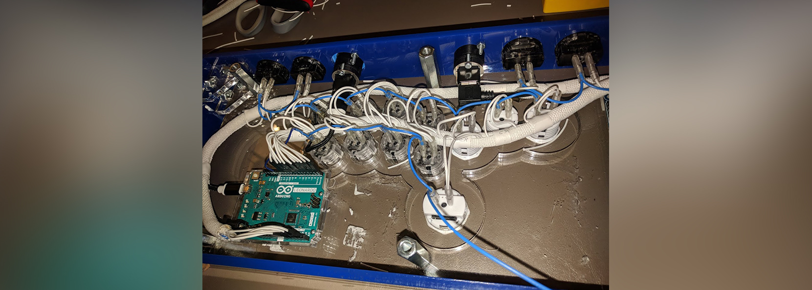

I've experimented with a few projects at the PSU electronics prototyping lab.
1 / 4
I wanted to make a logic chip that handled when a controller input left+right at the same time. The first step was getting a schematic from
Eagle.
2 / 4
 With some help, I designed the board, and sent the gerber files to
OSH park, who makes low-cost printed circuit boards (PCBs) for hobbyists.
With some help, I designed the board, and sent the gerber files to
OSH park, who makes low-cost printed circuit boards (PCBs) for hobbyists.
3 / 4
 Once the PCBs arrived, I ordered a few electronic parts from amazon, and soldered them to the board.
Once the PCBs arrived, I ordered a few electronic parts from amazon, and soldered them to the board.
4 / 4
 Here's a close shot of the final product.
Here's a close shot of the final product.
1 / 4
 Here's a picture of my first attempt at wiring up a controller, around 2017.
Here's a picture of my first attempt at wiring up a controller, around 2017.
2 / 4

After checking some tutorials, I made this in December 2018. It was experimental and had to be taken apart.
3 / 4
This is my latest creation. I made it with an 8 dollar usb light strip.
4 / 4
The buttons on the front change the colors or the light mode.